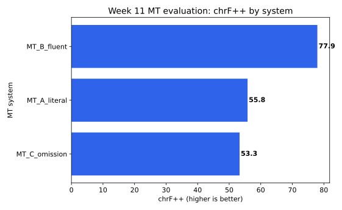
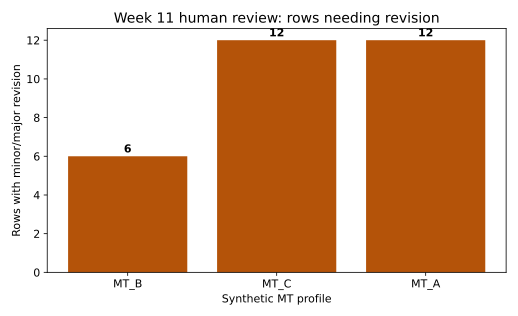

Tuần 11
MT evaluation
Metric hữu ích, nhưng human review vẫn cần.
36MT output rows
3synthetic systems
BLEU chrF TERcore metrics
Question
System nào đáng tin hơn cho câu chính sách giáo dục?
Ta so sánh metric table với simplified human labels.
Which synthetic MT system is most reliable?
Unit
Một row = một source segment từ một MT system
zh_sourceChinese source
vi_mt_outputVietnamese MT output
vi_referenceVietnamese reference
Caution
Metric không phải human judgment
Yếu: BLEU cao nên bản dịch tốt nhất
Tốt hơn: metric cao, nhưng cần xem lỗi omission/register
Schema
Schema tối thiểu cho MT evaluation
sourceoutputreference
zh_sourcevi_mt_outputvi_reference
BLEU
BLEU nhìn word/ngram overlap
BLEU hữu ích khi so sánh corpus, nhưng nhạy với reference và tokenization.
higher = closer overlap
chrF++
chrF++ nhìn character + word overlap
Với tiếng Việt, chrF++ có thể bổ sung góc nhìn surface similarity.
character + word n-grams
TER
TER là edit rate: thấp hơn tốt hơn
Đừng đọc TER cùng chiều với BLEU/chrF++.
lower = fewer edits
Python
Loop qua từng mt_system
Mỗi system có hypotheses và references riêng.
for system, rows in data.groupby("mt_system"):
compute metricsTable
Metric summary table
systemBLEUchrF++TER
MT_B_fluent63.4777.9423.04
MT_A_literal34.7255.8247.06
MT_C_omission32.9653.2949.02
Human review
Simplified labels giải thích lỗi
omissionmissing meaning
terminologywrong term
styleawkward but understandable
Figure
Figure 1: chrF++ by system

Figure
Figure 2: human error counts

Writing
Results paragraph = metric + human label + limitation
System ___ had the highest metric score, while human labels showed ___.
Source note
Luôn ghi metric settings/source
Report metric source, version/signature when possible, and access date.
Next